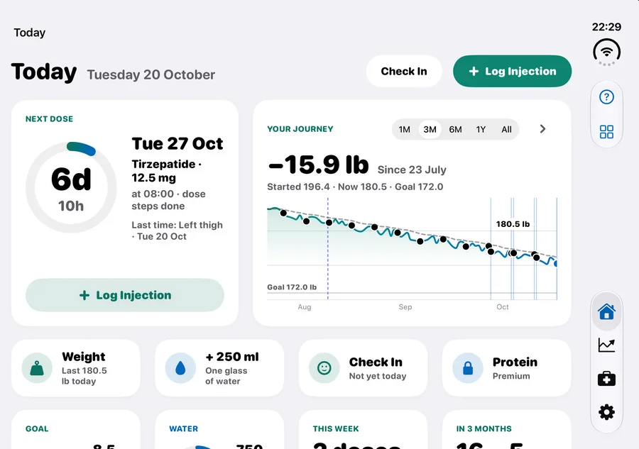

Événement App Store · 15 oct. – 14 nov.
Nouveau dans GLPMGR 2.2
Pensé pour l’iPhone Duo, et plus rapide au quotidien.
Ouvrez votre iPhone Duo : Aujourd’hui devient un seul écran apaisé, avec votre prochaine dose à côté de votre parcours et la saisie d’un toucher en dessous. Sur tous les iPhone et iPad, enregistrer une dose ou un verre d’eau ne demande plus qu’un toucher ou deux.
- iPhone Duo. Ouvert, il s’organise comme un iPad. À moitié ouvert sur une table, votre prochaine dose s’affiche en haut et la saisie en bas. Fermé, l’écran extérieur fonctionne comme n’importe quel iPhone.
- Saisie rapide. Un verre d’eau ou une portion de protéines d’un toucher, avec Annuler, et votre poids ou le bilan du jour à un toucher.
- Enregistrez une dose sur un seul écran. Enregistrer l’injection se trouve toujours dans Prochaine dose, avec le lieu et la date de votre dernière injection.
- iPad en mode paysage. Prochaine dose à côté de Votre parcours, Saisie rapide, votre objectif, l’eau, votre semaine et vos sites d’injection, le tout sur un seul écran.
